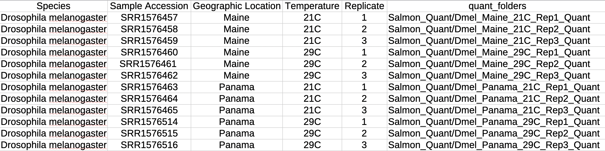
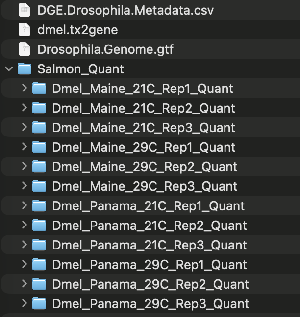
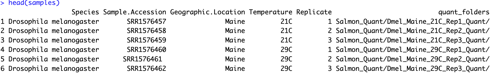
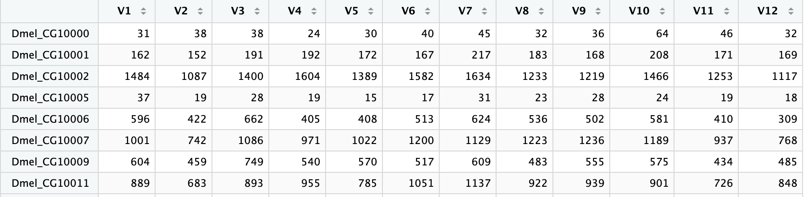
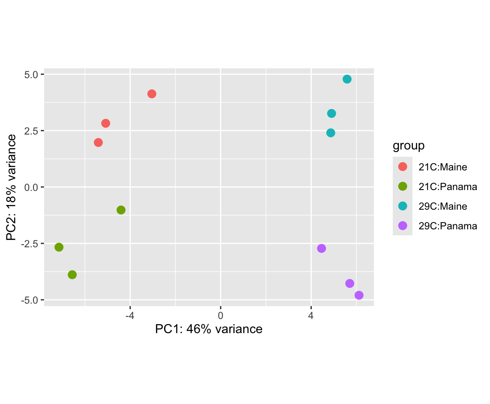
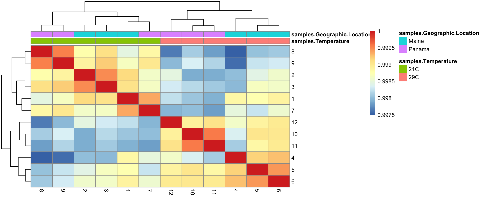
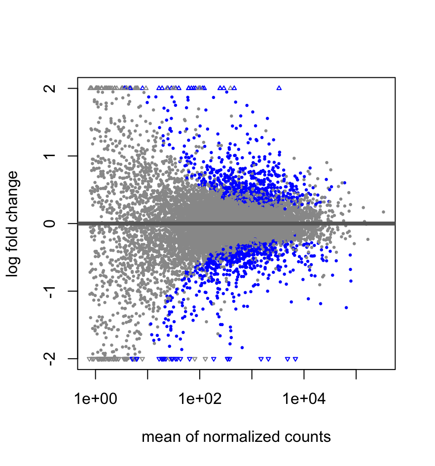
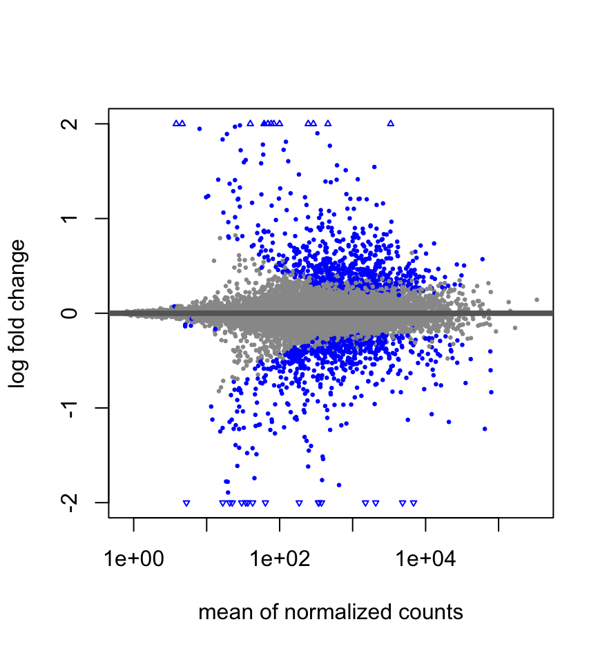

Differential Gene Expression
deseq2, r, expression
Goals of the lab overall
The skills acquired in this lab class are crucial for bioinformatic tasks using molecular data, such as data analysis, scripting, and working in high-performance computing (HPC) environments. My hope is that you don’t just type the commands into the terminal and move on – I would like you to think about what these commands are doing and start imagining how they could be useful in analyzing your own data.
For your success in the lab
Each lab is inteded to be a reference point for you on various bioinformatic tasks. To make the most of these labs, please treat them like a personal resource, so adjust any specific commands accordingly.
Lab Deep-dive
Overview of today’s lab
Today’s lab will focus on finally assessing differential gene expression in our test datasets (yay)! At this point, it is crucial that you take a moment to recognize how much work you have done (it’s a lot). Try and take a couple minutes to deeply understand what steps you have taken to generate and prepare the data for today’s lab.
Many of you will likely choose to repeat this work in your project, so getting help now, while the work is still more fresh, is important. Again, the greatest aim in this lab course is to build your comfort interacting with the HPC and handling files. This is where repetition is really powerful, as it really is practice, practice, practice!
Make sure to ask questions as needed!
Moving files, DESeq2, Differential Gene Expression!
Preparing today’s lab
Today, we will working with the transcript quantification data prepared in the last lab, which used the previously published Drosophila melanogaster data.
If you have not already, you should make a folder on your Desktop for today’s lab. You can name this anything you want (I am going to call mine DGE_Analysis)
Open two terminal windows.
In one of those terminals, log onto the HPC
On the HPC and in your lab folder in
scr10, you should move into yourtranscript_quantificationfolderYOUR CODE HEREUse
pwdto view thePATHto this folder. Make sure to copy this path!Using your local terminal (not connected to the HPC), move into today’s folder (again, I called mine
DGE_Analysis)YOUR CODE HEREYou will use your local terminal (not connected to the HPC) to download the data from the
Salmon_Quantfolder.scp -r wm-username@bora.sciclone.wm.edu:[PASTE-THE-PWD-PATH]/Salmon_Quant ./scpworks by moving files from a location to another location.By putting the files from the HPC first,
scpwill copy those files from the HPC to your computer.Once your local terminal says the files have downloaded, you can close the terminal connected to the HPC. Do not close your local terminal yet!
Preparing R-Studio
Today, we will be using DESeq2 to perform the differential gene expression, which is a fantastic tool built for R. To use it though, we will need to install some R packages to make sure it works.
To make life easy, I recommend making a new R-script to save today’s commands. This will make a great reference point for yourself in the future!
We have a number of tools to install in
R. Fortunately, this is very easy with theinstall.packages()command. Likeconda, there is a special package manager forRthat handles biology-related tools, calledBioconductor. We will install this first as it will manage the installs for the remainingRpackages.if (!require("BiocManager", quietly = TRUE)) install.packages("BiocManager")For the remaining software, I will provide you with one install command, and you will have to install the remaining software in the list that follows. You will likely be prompted to update things when trying to install the additional software. When that happens just update all the packages,
a.BiocManager::install("tximport")
Note that you will only need to install the software ONE time!
Now that everything is installed, we need to “import” those tools. Again, I will provide a single example, and you should go ahead and repeat it for all the tools installed.
library("tximport")
Great, now the tools for R are all loaded and prepared! We now need to do a little more preparation before we can do the analysis itself.
Preparing Data for DESeq2
There are a good number of steps to actually prepare our data for analysis with DESeq2. Today’s lab will largely focus on the data preparation and quality checking.
We will wrap up this week’s lab by running DESeq2, but will likely save the deeper analyses for next week.
Trasncript-to-Gene-Name Table
While Salmon quantifies expression based on transcripts, we tend to want to explore gene-level expression instead, which is what we will be doing! It does make the interpretation a bit more simple, but it also means that we need to prepare the transcript-to-gene table.
Fortunately, we just need the .gtf file, which can be downloaded from Blackboard.
Below, are the steps to prepare this table.
You will create the transcript-db table from the
Drosophila.Genome.gtffile. To do this, you will need thePATHto this file. This is pretty easy to do!Find this file on your computer, then drag it into your terminal! You should see the file’s
PATH.Make sure to copy this path!
We can put this
PATHintoR-Studiotxdb <- makeTxDbFromGFF(file = "PATH-TO-GTF-FILE", format = "gtf")Now we need to extract the transcript names
k <- keys(txdb, keytype = "TXNAME")Now we can pair each transcript name with its corresponding gene ID. Remember, all gene ID’s are unique and may have multiple transcripts (isoforms) corresponding to them. We want to “flatten” this to make it easier to analyze.
tx2gene <- select(txdb, keys = k, columns = "GENEID", keytype = "TXNAME")Ris fantastic, because it makes it easy to see the data as well. We can check out the first few rows of this transcript-to-gene table usinghead()head(tx2gene)While we can move on with the remaining preparation steps and analysis, it is always a good idea to save these types of tables, just in case. We will save the table in the same place as the
DGE.Drosophila.Metadata.csvfile, to keep them together.
Copy the PATH to the DGE.Drosophila.Metadata.csv, excluding the filename! We just want the folder location.
Using the
PATHyou copied, let’s save the table.write.csv(tx2gene, file = "PATH-TO-GTF-FILE/dmel.tx2gene", row.names = FALSE)
Now we just need to update the meta-data table and we are nearly set!
Preparing the Meta-Data Table
To make life as easy as possible, we are going to add a little more information to the DGE.Drosophila.Metadata.csv file. In fact, we are going to link each sample (row) in the table to the PATH to the corresponding transcript quantification output file (quant.sf) generated by Salmon.
In your local terminal, navigate to the folder that has all of your folders generated by
Salmon. Mine are in theSalmon_Quantfolder still.YOUR CODE HEREIn the
DGE.Drosophila.Metadata.csvfile, make a new column calledquant_folders. Each row will need you to paste the folder that theSalmonoutput folders are in, as well as the folder for that specific replicate.For me, the very first sample would be
Salmon_Quant/Dmel_Maine_21C_Rep1_Quant
Example of the prepared metadata for my computer
At this point, your folder with all the relevant data should look something like this:

Putting Everything Together
We are finally prepared to run the differential gene expression analysis! Well, almost ready. The steps below are predominantly for R and will let you know explicitly when you need to access the terminal.
Using your terminal (right away, ha!), find and copy the path to your
DGE.Drosophila.Metadata.csvfile.YOUR CODE HERE IF NEEDEDIn your
Rscript, we need to make a variable,dir, that has thePATHto your folder. This should be the same as the path you copied above, just removing the file.dir <- "PATH-TO-FOLDER"Next is to make another variable,
samples. We will pass it the location of theDGE.Drosophila.Metadata.csvfile, which has all of the information for the analysis.samples <- read.csv(file.path(dir, "DGE.Drosophila.Metadata.csv"))read.csv(): tells the code to read a comma-separated-values filefile.path(): tellsRto find the path to the file located in a specific directory When combined (as in the command above) it finds the table, reads it, and saves its contents tosamplesLet’s look at the first few lines of
samples, usinghead()head(samples)
You should see all the meta-data that we need!
Now we need to tell
Rwhere thequant.sffiles are in our folder. We will save those locations to another variable,quant_filesquant_files <- file.path(dir, samples$quant_folder, "quant.sf")Also, it’s a good time to use
headto just check that everything looks right too!YOUR CODE HERENow, we need to link the
quant.sffiles to thetx2genedata we prepared. This also serves as an opportunity to tellRthat the data were generated usingSalmon
txi <- tximport(quant_files, type = "salmon", tx2gene = tx2gene)We are at a critical part in preparing our data for DESeq2. Many experiments are designed to be relatively simple, such as untreated versus treated. However, our data have two big variables to test that could impact our analyses: temperature and location.
It could be that the predominant difference in gene expression is driven by one of these factors. Although it is more likely that it is a combination of temperature and location. We need to tell
DESeq2that there may be an interaction between these variables.DESeq2by default knows nothing, and so the very last step towards preparing data for the analysis is to describe the experiment.For our data, given that it is “multi-factor” and that the differentially expressed genes may be a result of the interaction between temperature and location, we will make sure our design reflects that.
To make the downstream work easier, we are going to explicitly make “groups” following our meta-data table. This will make it possible to make our broad comparisons more easily.
Let’s go ahead and explicitly describe our groups
samples$group <- factor(paste(samples$Geographic.Location, samples$Temperature, sep = "_")) sampls$groupYou should see that each sample is similarly named to our metadata, with the geographic location AND the temperature!
Finally, we can prepare
dds <- DESeqDataSetFromTximport(txi, colData = samples, design = ~ group)TipDESeq2’s designThe
designargument inDESeq2tells the software what variables could be contributing to the observed differential gene expression.While we are using a multi-factor design, much of the time, research is just exploring a single variable (we will call it
sample_typefor this example), with multiple conditions (e.g., control, treatment-1, treatment-2):design = ~ sample_typeDESeq2has an amazing manual with some examples for other designs, so check there for more!
Quality Checking BEFORE DGE!
Before we run our differential gene expression analysis, it is always nice to explore your data ahead of time. The focus here is to know if any of your samples are behaving unexpectedly, which could reflect a technical issue or some biological chaos!
From experience, there is the occassional mis-labeling of a sample, which can make the analysis challenging or impossible. Personally, if we are seeing that there is a strong likelihood that a sample is mis-labelled, you really have two options: 1) keep the mis-labelled sample as it is (personal preference) or 2) remove it from the study. Be aware that this does happen, and I recommend the most conservative (i.e., careful) approach is the “best” approach.
Alright, let’s dive in!
Let’s take a look at the actual data that we prepared for
DESeq2View(counts(dds))In this table you will notice that there are 12 samples (columns) and many rows (genes). The values are the read “counts” generated by
Salmon
Snippet of the ddstableBefore we visualize the data, we are going to normalize the read counts to improve the data visualization steps. This is not always necessary, but it often makes for more appropriate comparisons. We will be using the regularized-logarithm transformation that is part of the
DESeq2package.It is important to note that
DESeq2will use the raw read counts for the actual analysis, so do not pass the normalized values.rld = rlog(dds, blind = TRUE)blind: makes sure thatrlogonly looks at the counts and ignores all the other metadata!
Now we can run the principal components analysis, which a dimension reduction technique to visualize complex datasets in 2-D (i.e. graphs!). We will talk about how this works in class!
plotPCA(rld, intgroup = 'Temperature')intgroup: provide a variable to distinguish your groups!
Go ahead and try replacing
TemperaturewithGeographic.Location.What do you notice?
The axis labels describe the variance in the dataset. In this dataset, the x-axis (PC1
) and y-axis (PC2`) account for 46% abd 18% of the variance, respectively. What is cool is that you can simply sum those values to get an idea of how much variability in your data are explained by these two axes, which is ~64% (this is pretty high!)So cool!
Did you know that you can run the
plotPCAwith two variables to put on the plot?plotPCA(rld, intgroup = c('Temperature', 'Geographic.Location'))How cool is this? (very very cool)
In your plots you should notice that there is reasonable distance between each temperature and location! That’s a pretty nice dataset even without any data cleaning!

PCA plot of Geography and Temperature The only other exploratory analysis we will do is some
hierarchical clustering. Before we do this, we do need to extract some information from our bigsamplesdataframe. This will make the visualization easier.meta <- data.frame(samples$Temperature, samples$Geographic.Location, row.names = colnames(txi$counts))We are just linking the variables we are testing to the samples themselves
Hierarchical clustering can be done many ways, but for today, we will simply explore the correlation between our raw samples. It is pretty straightforward to generate the pairwise correlation matrix
# converts the dataframe to a matrix rld_mat <- assay(rld) # generates the pairwise correlation matrix from the raw matrix rld_corr <- cor(rld_mat)Now we can do the visualization, using
pheatmap. All this will need is our correlation matrix and our mini-metadata table.pheatmap(rld_corr, annotation = meta)What do you notice?
Interestingly, there is a clear separation of the data by temperature (whew). You might also notice that in the samples from
21Cthat one of thePanamasamples is next to theMainesamples. This is a bit surprising, but I would not worry too much!With correlation values so high (>0.99) there really are no outlier samples that we need to worry about.

Correlation heatmap looks pretty good!
The data look ready for our analysis!
Running the DGE Analysis!
You made it! Now that we are sure the data look nice enough to work with, we can run the analyses!
- Last thing before we un the analysis, is that we should remove rows (genes) that really contain no information/data. The common approach is to remove any row that has <10 reads in it (summed across all samples)
good_rows <- rowSums(counts(dds)) >= 10
dds <- dds[good_rows,]Now we can run our analysis!
dds <- DESeq(dds)It’s as simple as that!
Assessing DGE Results
Now is the fun part, exploring the results. We will just look at one of these today and do more next week, with some deeper visualizations and interpretations.
For today, let’s explore the differential expression between low and high temperature exposed flies from Maine.
To determine which samples we want to explore, we need to specify
constrasts. You can see the potential contrasts from the analysis.resultsNames(dds)You will see some unclear names… but it’s okay!
It is nice and straightforward to explore specific comparisons. In general, below is the code to get the result for a specific pair of comparisons:
result_sample_cond1_cond2 <- results(dds, contrast = c("sample", "cond2", "cond1"))cond1will be our reference point, so we are seeing what is differentially expressed relative to this condition!Let’s assess the differential gene expression between temperatures in the Maine population
result_maine_21C_29C <- results(dds, contrast = c("group", "Maine_29C", "Maine_21C"), alpha = 0.05)
summary(result_maine_21C_29C)Before we look at the results, we should also adjsut the p-values using a generalized linear model (
apeglm), which will make our estimates for differential expression a bit more conservative.res_maine_21_29_apeglm <- lfcShrink(dds, coef = "group_Maine_29C_vs_Maine_21C", type = 'apeglm', res = result_maine_21C_29C) summary(result_maine_21C_29C)Did you notice any difference in the summaries?
Let’s make some MA plots to visualize our results!
We will start with the “raw” results
plotMA(res_maine_21_29, ylim=c(-2,2))You should notice that there is some wide dispersion of the data with low normalized counts
Now comnpare that to the “lfcShrink” results!
plotMA(res_maine_21_29_apeglm, ylim=c(-2,2))That dispersion is now gone! This is important as the log2-fold-change is a major means that we use to filter our datasets.

MA-plot with NO lfcShrinking 
MA-plot WITH lfcShrinking Final thing for today is to save those results to a table! We will
out_csv <- file.path(dir,"Maine.21C_29C.DEG.csv") write.csv(as.data.frame(res_maine_21_29_apeglm), file = out_csv)
Alright, tons happened in this lab. You should explore some of the other contrasts on your own and try to come up with some ideas of what this might mean, biologically!
Quick Start Guide
This is for your reference in the future, so you don’t have to slog through all the work above! Also, what a great way to practice this week :)
Below, the steps are numbered with emtpy code blocks below them. Copy-paste your commands there!
With the packages installed, you will not need to run the installation a second time!
Load the libraries for the analyses
YOUR CODE HERERead the
tx2genetable. You just need to put thePATHin its placetx2gene <- read.CSV(PATH-TO-TX2GENE-TABLE)Read your meta-data file. I recommend using the
dirand the filename like in this labYOUR CODE HEREHave
Rfind yourquant.sffilesYOUR CODE HERELink the gene-IDs to the outputs from Salmon with
tximportYOUR CODE HERESet up your experimental design
YOUR CODE HEREPrepare the
DESeq2dataframeYOUR CODE HEREExplore your dataframe, if you would like!
YOUR CODE HERERemove rows from the
DESeq2dataframe that are essentially “empty”YOUR CODE HERERun
DESeq2
YOUR CODE HERE- Check the comparisons you can do
YOUR CODE HERE- Get the raw results from your contrast you want to compare
YOUR CODE HERE- Make sure to adjust the log2-fold change with
lfcShrink
YOUR CODE HERE- Make the MA-plot
YOUR CODE HERE- Save the results table for this particular comparison
YOUR CODE HERE